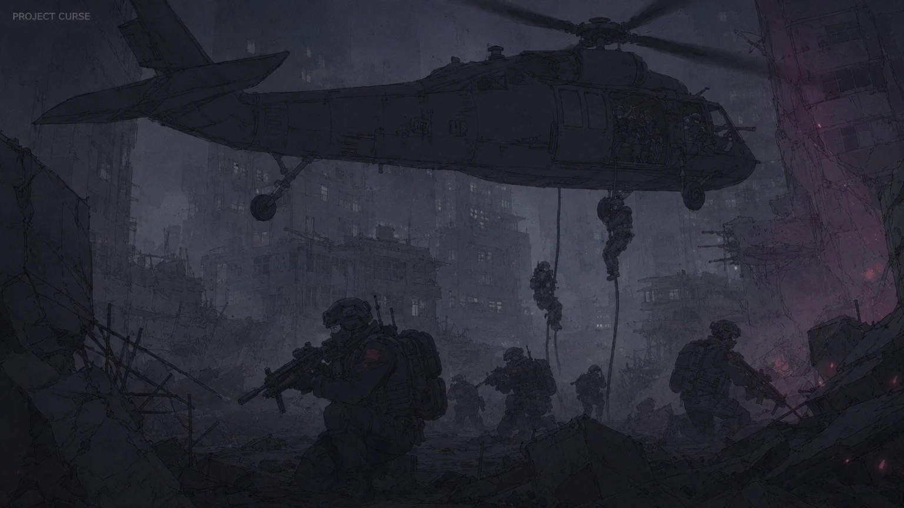
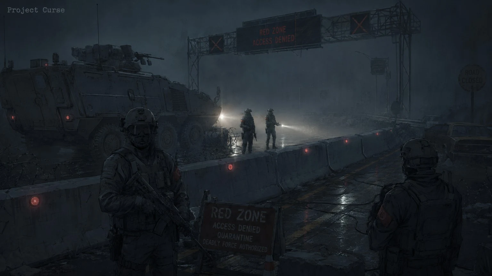

작전·사건 추가 기록
레드존 전쟁, 봉쇄 실패, 귀환자 선별 사고, 콜드 파일 재개방을 작전 좌표와 연결해 보존한 추가 기록.
레드존 전쟁
레드존 전쟁 기록은 레드존이 단일 사건 현장이 아니라 장기 전선으로 바뀐 시기의 작전 기록을 묶는다.
제1차 레드존 전쟁

N.H.C와 U.A.C가 레드존을 일시 봉쇄선이 아닌 지속 전장으로 인정한 첫 대규모 교전기다. 이후 레드존 요새, 전진기지, Ash Crew 후처리 체계가 정식화된다.
실패한 봉쇄 메가프로젝트
광역 방어선으로 레드존을 단기간에 압축하려 했으나, 혈문과 죽은 시간 발생으로 방어선 일부가 내부에서 무너진 사건군이다.
봉쇄 실패
봉쇄 실패 기록은 방어선 붕괴, 철수 실패, 기록 회수 실패가 동시에 발생한 작전을 정리한다.
블랙월 붕괴

블랙존 후보지를 둘러싼 장기 봉쇄벽 일부가 내부 오염과 외부 개체 이동을 동시에 겪으며 붕괴한 사건이다.
봉쇄선 붕괴 코드 최초 발령
민간인 대피 실패, 타락 개체 외부 유출, 오염 무전 반복이 동시에 확인되며 N.H.C 봉쇄 대응 기준이 재작성된다.
귀환자 사건
귀환자 사건은 구조된 민간인이 안전하다는 판단이 실패했을 때 발생한 기록을 묶는다.
귀환자 선별 실패 사건
C.P.D 선별소를 통과한 귀환자 일부가 동일한 꿈과 동일한 목소리를 반복 증언했고, 이후 대피 거점 내부에서 기억 동기화가 발생했다.
집단 기억 동기화
서로 접촉하지 않은 귀환자들이 같은 붉은 문, 같은 대피소, 같은 사망 장면을 증언한 사례다.
콜드 파일
콜드 파일은 종결된 것으로 처리되었으나 새 증거와 함께 다시 열린 사건군이다.
제1차 콜드 파일 재활성화
과거 단순 실종으로 종결된 기록에서 오염 무전, 의식성 표식, 혈문 잔류가 재확인되며 U.A.C가 기록을 재개방한다.
여왕형 개체 최초 확인

둥지화, 개체군 지휘, 통신 방해, 기록 왜곡이 동시에 확인되며 기존 상위 개체와 구분되는 여왕형 개체 신호가 최초로 기록된다.
우시노다교 대규모 의식 사건

의식장과 레드존 이상현상이 겹친 사건으로, 이후 타락 개체 분류 추가 보고서의 교차 오염 항목에 참조된다.